Как читать авторский курс и нормативные материалы
Это учебные материалы, а не заключение о соответствии конкретного продукта. Организационные модели курса отделяйте от терминов стандарта: ППК в опубликованном проекте — машиночитаемый перечень, а живой реестр его версий является практикой сопровождения. Термин OSA в разных материалах имеет разный охват. Статус и обязательность нормативного документа проверяются отдельно; проект КАПО опубликован как проект первой редакции.
Конспект: корпоративный кейс — генератор фактов и сервис вердиктов
Зачем модуль
В Организации сложилась двухсервисная связка, потому что наивная схема «один сканер на всё» в реальной поставке от соисполнителей разваливается. Сырой SBOM от cdxgen приходит с дырами: для C/C++-компонентов в нём видны компоненты, но не видны фактически слинкованные системные библиотеки и их версии; PURL частично отсутствуют; лицензии — текстовые строки без нормализации. Если в таком виде сразу прогонять анализатор, получаем мало findings и ложную картину «всё чисто». Модуль показывает, как Организация разнесла обработку на два контура: один доводит факты до качества (обогащение), второй выносит решения (вердикты и готовность) — и почему нельзя путать эти ответственности.
Разделение нужно не из любви к архитектуре, а потому что у фактов и решений разные жизненные циклы и разные владельцы. Факты пересобираются автоматически при каждой новой поставке артефакта; решения принимаются людьми, живут дольше одного релиза и подлежат периодическому пересмотру. Если смешать их в одном сервисе, то любое переобогащение состава начнёт стирать ранее принятые вердикты, а любое юридическое решение — «протекать» в данные о составе и делать их невоспроизводимыми. Кейс этого модуля — рабочая граница, которая удерживает оба свойства одновременно: состав всегда можно пересчитать, а решения по нему — предъявить с историей.
Ключевые идеи
Генератор фактов (enrichment-утилита) — CLI с единственной командой enrich-sbom. На вход — сырой CycloneDX от cdxgen плюс каталог ELF-бинарников соисполнителя. Внутри происходит то, чего cdxgen не делает: бинарный анализ ELF (через LIEF + ctypes) находит динамически слинкованные библиотеки, маппит их на системные DEB-пакеты через apt, добивает метаданные компонентов из PyPI, npm, Conan и apt. На выходе — обогащённый валидный bom.json. Жёсткая граница: утилита не ищет уязвимости, не проверяет лицензии на допустимость, не строит graph рисков. Она только фиксирует «что есть».
Сервис аудита/вердиктов — full-stack веб-приложение (загрузка SBOM соисполнителей → парсинг → юридический workflow). Здесь появляются вердикты по лицензиям, заключения, паспорта рисков и readiness-отчёт по релизу. Этот сервис ничего не дописывает в состав — он интерпретирует факты и хранит решения с автором, датой и обоснованием. Уязвимостный workflow выносится в Dependency-Track: туда импортируется обогащённый состав, оттуда забирается VDR/VEX, и сервис увязывает каждую запись о уязвимости с конкретной версией компонента и состоянием обработки.
Передаточное звено — артефакт-репозиторий. Между двумя контурами лежит хранилище, куда генератор фактов кладёт bom.json, а сервис вердиктов его оттуда читает. Это не просто папка: именно здесь фиксируется иммутабельность и provenance — версия артефакта, дата, соисполнитель, commit/tag сборки. Если этот узел пропустить и подавать SBOM «из рук в руки», теряется ровно та трассируемость, ради которой и строились оба сервиса: на аудите нельзя будет доказать, какой именно состав породил данный вердикт. Поэтому передача артефакта между контурами — отдельная контрольная точка, а не техническая деталь.
Факты vs Решения Факт обратим и воспроизводим: повтори
enrich-sbomна том же входе — получишь тот жеbom.json. Решение субъективно и подписано: вердикт «copyleft несовместим с поставкой» имеет автора и срок пересмотра. Аудитор должен мгновенно отвечать, по какую сторону границы находится любая строка отчёта.
Как выглядит на практике
Команда первой стадии (генератор фактов):
# CLI генератора фактов (enrichment-утилита), единственная команда:
enrich-sbom raw-bom.json enriched-bom.json --component-path ./build/bin
Эффект обогащения на одном компоненте — появляется purl, нормализованная лицензия и evidence-привязка к DEB:
{
"type": "library", "name": "libssl3", "version": "3.0.13-0ubuntu3",
"purl": "pkg:deb/debian/libssl3@3.0.13-0ubuntu3?arch=amd64",
"licenses": [{ "license": { "id": "Apache-2.0" } }],
"evidence": { "identity": { "field": "purl", "methods": [
{ "technique": "binary-analysis", "confidence": 0.8 }] } }
}
Дальше — водораздел двух контуров и весь конвейер целиком:

Слепые зоны именно этой темы
- Утечка интерпретации в генератор фактов. Соблазн «заодно отфильтровать GPL» на стадии обогащения ломает воспроизводимость: факт перестаёт быть фактом.
- Версионный разрыв форматов. Удаление Excel-отчёта в версии 2.0.0 генератора означает, что потребитель обязан читать
bom.json; забытый скрипт на старую команду молча перестаёт получать данные. - DEB-маппинг привязан к окружению. Бинарный анализ требует Astra/Debian-окружения (
python3-apt,liblief); запуск на другой ОС даст неполный маппинг и тихо занизит состав. - «Зелёный» readiness при пустом VDR. Если Dependency-Track ещё не подтянул фид БДУ/OSV, отсутствие findings выглядит как готовность, хотя это лишь отсутствие данных.
Связь с нормативкой
- SSDF — PS.3.2 (хранить provenance компонентов) и RV.1 (реагировать на уязвимости) ровно описывают два контура кейса.
- ГОСТ Р 56939-2024 — требование управляемости работ; здесь это разделение ответственности фактов и решений.
- CycloneDX ECMA-424 и OWASP SCVS — качество обогащённого SBOM (purl, evidence, лицензии).
- Шаблон управленческой сводки готовности и Порядок загрузки VDR — выходные артефакты второго контура.
Что уносим в работу
- Прежде чем доверять findings — проверь, что SBOM обогащён (есть purl/evidence), а не сырой.
- Никогда не выноси вердикт внутри генератора фактов и не дописывай состав внутри сервиса вердиктов.
- Readiness считай валидным только при «живом» VDR (фид подтянут, дата свежая).
- Фиксируй версию генератора фактов — смена формата выхода ломает потребителей молча.
- Отрабатывай это на П28 (вход) и П29 (выход).